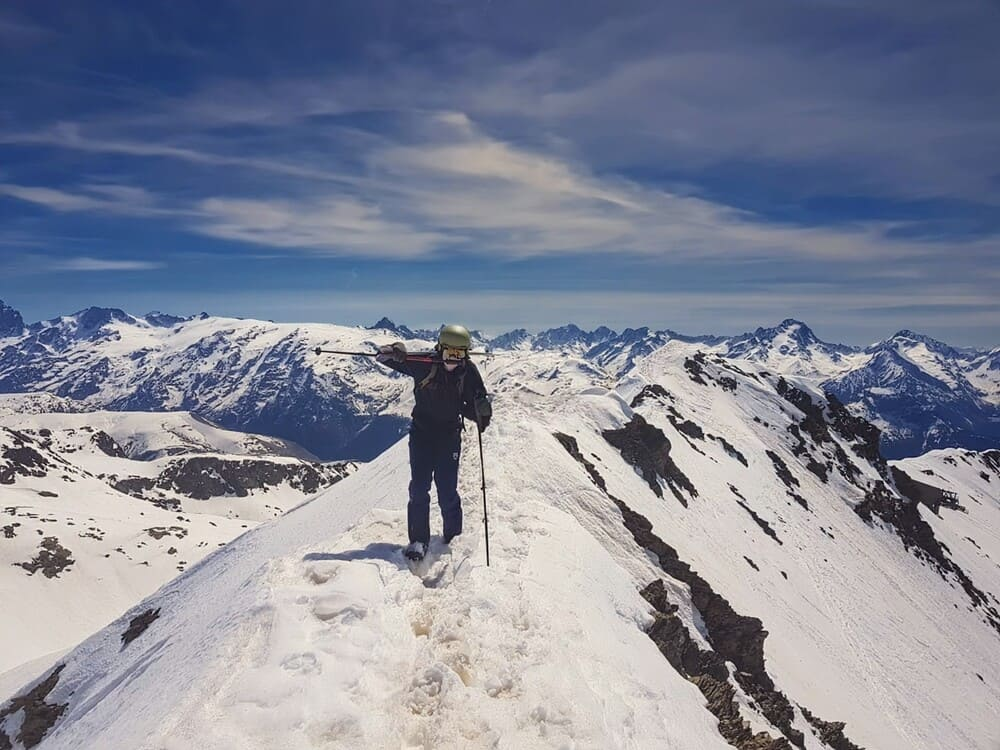
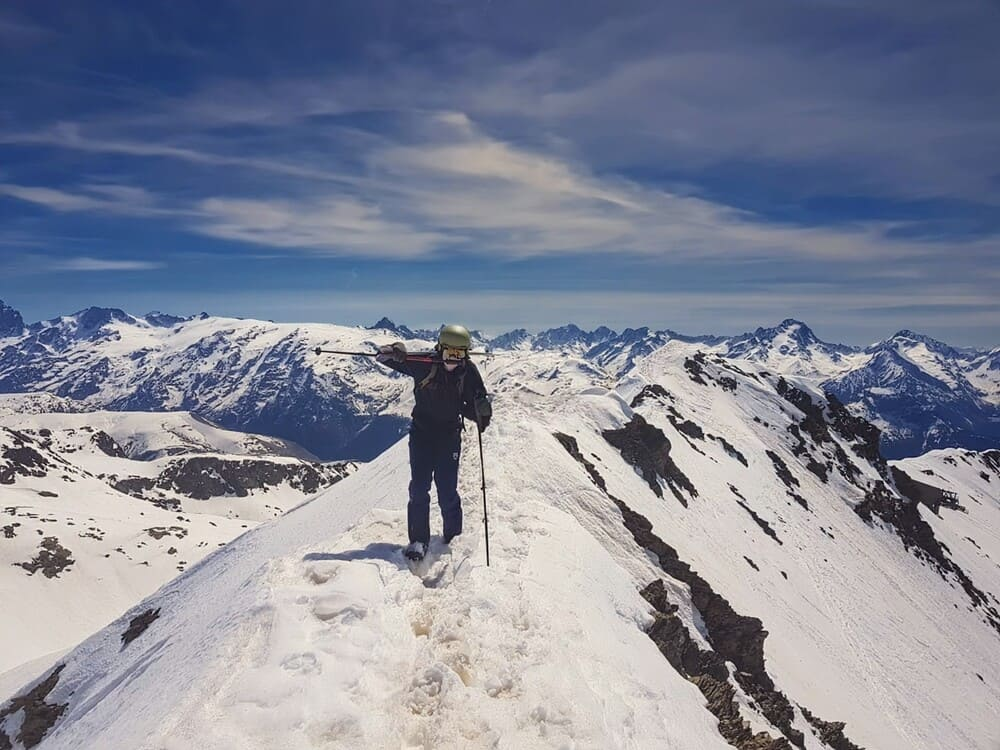

Maël Garnier
FullStack developper
étudiant en informatique
Bienvenue sur mon portfolio, où vous découvrirez mes projets et réalisations reflétant ma passion et mon expertise.
En apprendre plusA propos de moi
Je m'appelle Maël Garnier, originaire d'un petit village du sud de la Drôme, et je poursuis actuellement des études en informatique à Grenoble.
Avant le lycée, je ne connaissais ni ne m'intéressais beaucoup à l'informatique ou au développement. Cependant, des cours en seconde sur les bases de ce domaine ont éveillé en moi une véritable passion.
J'ai alors décidé d'approfondir mes connaissances en autodidacte, ce qui m'a poussé à poursuivre mes études dans ce domaine. Mon enthousiasme pour le développement est resté intact, et je suis toujours aussi motivé à l'idée d'apprendre et de pratiquer.
Mes passions
Bien que l'informatique soit un domaine qui me passionne particulièrement, je poursuis parallèlement d'autres intérêts. Depuis mes sept ans, je pratique le VTT dans les montagnes du Diois, dont neuf années au club de cyclisme de Die. Je saisis chaque occasion pour monter sur mon vélo et explorer les montagnes environnantes, découvrant de nouveaux sentiers et perfectionnant ma pratique de ce sport.
Ma passion pour la montagne ne se limite pas au VTT. En hiver, je pratique le ski, tant alpin que de fond, des sports que j'apprécie depuis mon plus jeune âge et dont je ne me lasse jamais. Récemment, j'ai également commencé le vélo de route, ce qui me permet de repousser mes limites en endurance tout en découvrant les routes, les paysages et les cols de la Drôme.
Je suis également passionné de sport automobile. Je suis assidûment les grandes compétitions telles que la F1, la F2, le LMH, le LMDH et le rallye. De plus, je pratique moi-même le simracing (simulation de course).
 

Mon parcours
J'ai suivi ma scolarité au collège et au lycée de la cité scolaire du Diois, dans la ville de Die. Au lycée, j'ai opté pour une voie scientifique en choisissant les options Physique, Mathématiques et LLCE anglais (Langue, Littérature et Culture Étrangère) en première. En terminale, il m'a semblé essentiel de conserver la spécialité Mathématiques, tout en continuant avec LLCE pour améliorer mes compétences en anglais.
J'ai débuté en informatique en apprenant le Python en autodidacte durant mes années de lycée, développant de petites applications. J'ai notamment créé une application pour automatiser les calculs de réglages dans les jeux de simulation automobile.
Cette passion pour l'informatique m'a conduit à poursuivre mes études dans ce domaine. Ainsi, j'ai choisi de m'inscrire à l'IUT2 de Grenoble pour un BUT en informatique. L'avantage de cette formation est qu'elle me professionnalise, me permettant de travailler dès l'obtention de mon diplôme, tout en bénéficiant d'un accompagnement pédagogique qui favorise une progression rapide et une autonomie accrue.